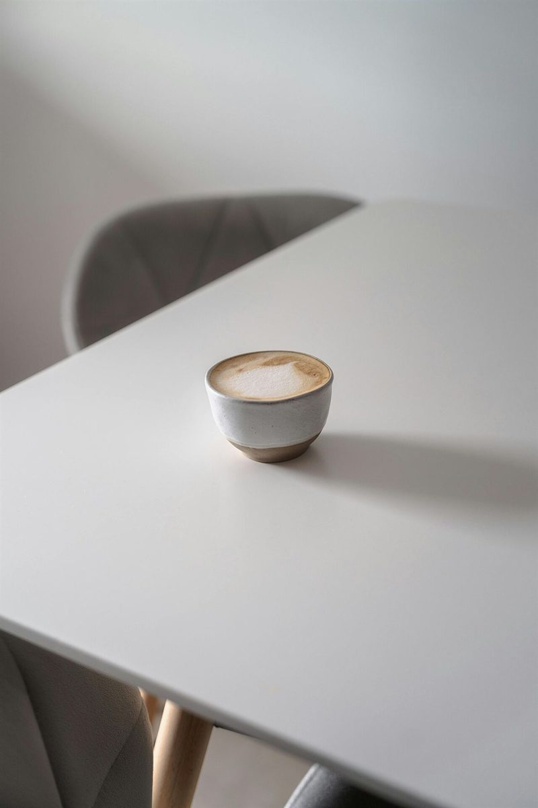

制作側の連想
卓上カレンダーの部位を、配置図にしてみる
このサイトは、机の上に立てて使う卓上カレンダーを図にする気持ちで作りました。六つの部位に番号をふり、上の図と並べています。制作側の連想で、お店の理念・由来とは無関係です。特定の商品の仕様や、実際の暦を示すものでもありません。
凡例
六つの部位
- 1台紙カレンダー全体を立たせる、背面側の折れる板。三角に開いて机の上に置きます。
- 2綴じリングページの上端を束ねる、輪の金具。めくるときの支点になります。
- 3絵面ページの上半分にある、絵や写真を載せる面。
- 4月名の帯絵面の下に渡す、月の名前を示す帯。
- 5曜日の見出し日付の表の一番上に並ぶ、曜日を示す一行。
- 6日付のます目曜日の下に並ぶ、日付を一つずつ入れる格子状の欄。
ギャラリー(イメージ)
パンとコーヒー豆の写真


写真はパンとコーヒー豆のイメージです。お店のものではなく、お店で提供している商品を示すものでもありません。
写真帯(イメージ)
カップの写真



カップの写真はイメージです。お店のものではありません。
ご案内
お店のこと(確認できたものだけ)
| 所在地 | 〒314-0144 茨城県神栖市大野原3丁目2-21 |
|---|---|
| 電話 | 準備中 |
| 営業時間 | 準備中 |
| 定休日 | 準備中 |
| ご予約 | 準備中 |
| 駐車場 | 準備中 |
| SNS | Instagram @cafe_plant_kamisu |